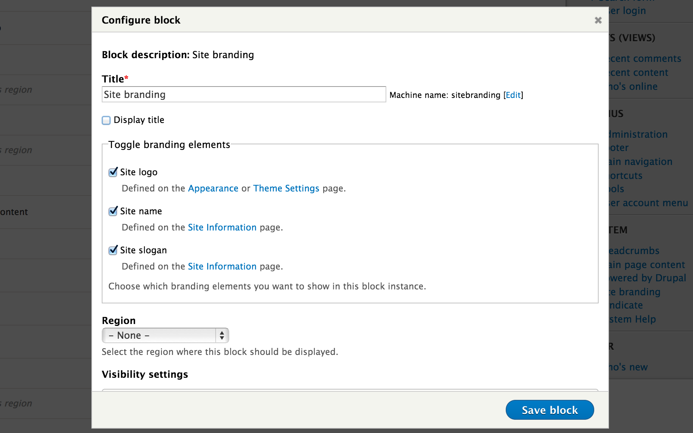
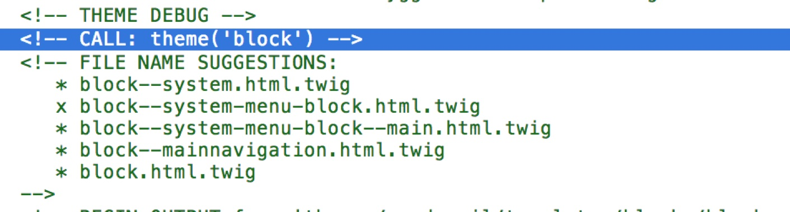
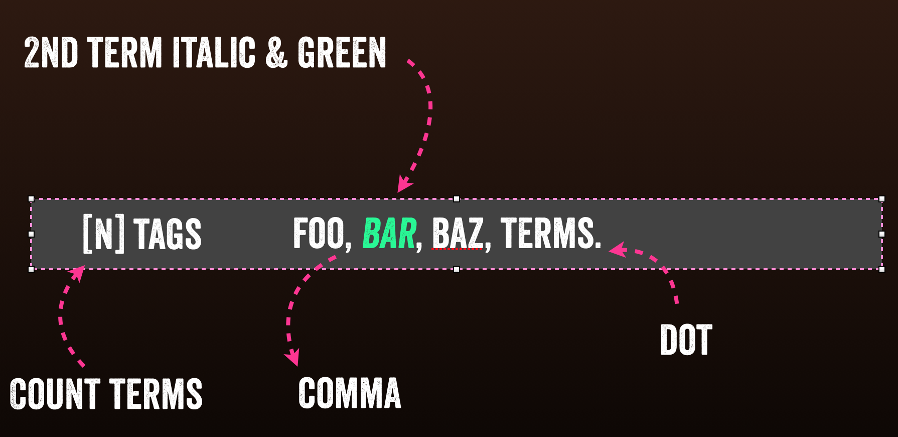
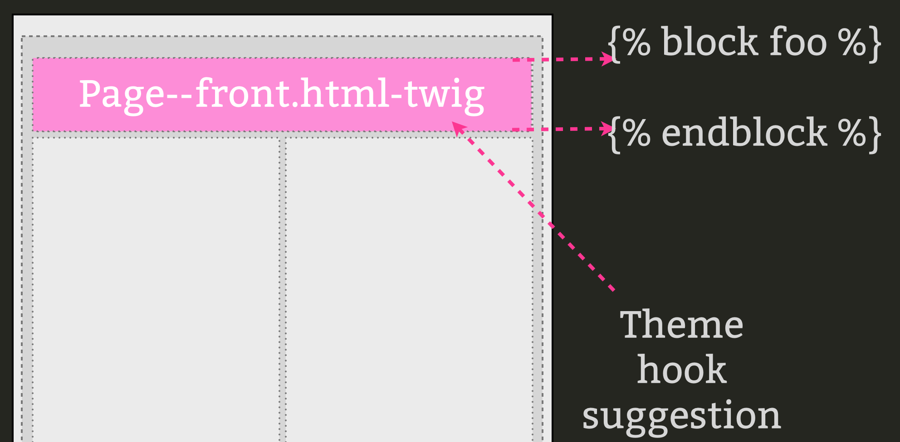
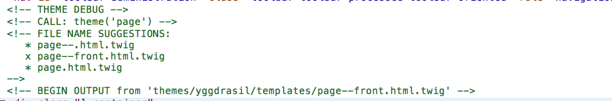
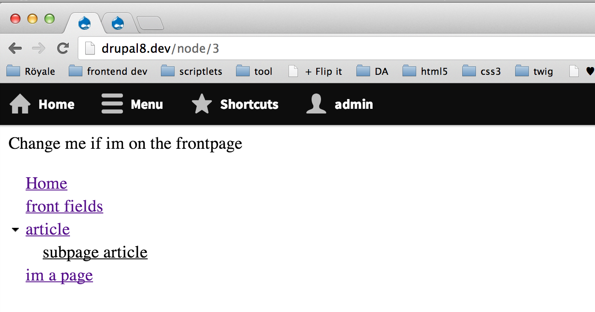
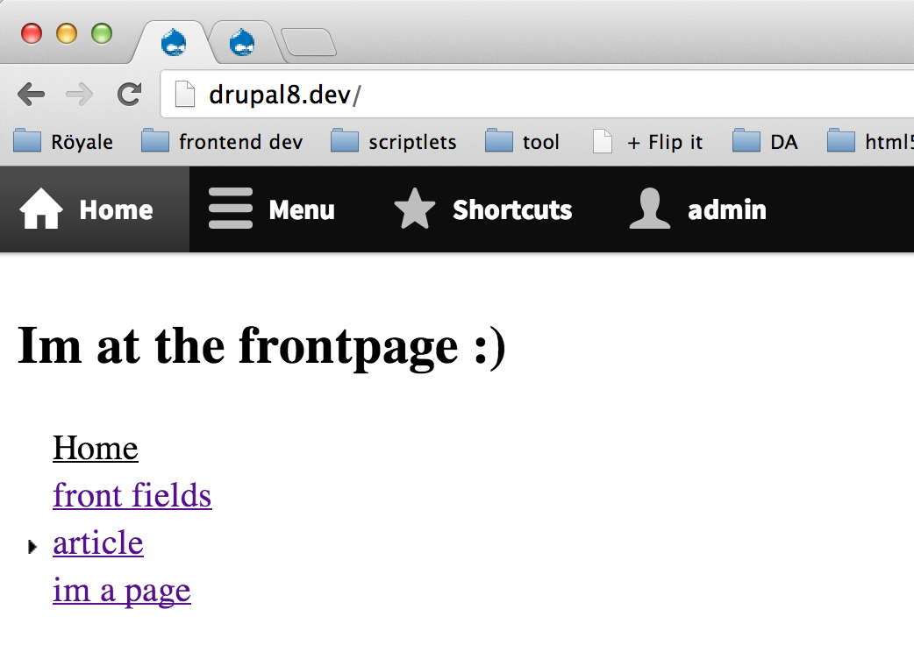

...
Vegan Themer at
@pakmanlh in the internets
#DdayBilbao2014
hello im drupal
always add another div
wait im just a piece of data
...
75% menos de ID's *
<body class="html one-sidebar sidebar-first not-front logged-in
page-node page-node- page-node-4 node-type-fieldtest ">
<body class=" how-about-we_figure_that-out ">
.notification {
/* general styles for all notifications */
}
.notification--info {
/* blue color adjustments */
}
proveer visibilidad
themes ahora viven en "/themes"
o "sites/ *** /themes"
modulename/templates/*.html.twig
$settings['twig_debug'] = TRUE;
Las plantillas twig son interpretables (Back y Front)
(no para themers: es la misma
is now a block
facilísimo
/*
comment
*/
<?php print $foo ; ?>
{# comment #}
{{ foo }}
/*
so php template
Now where is that value again
*/
<?php print $foo['bar']['UND']->baz['what']->thefuck['seriously'] ?>
{# hello twig can you find valdo ? #}
{{ foo.bar.baz.done.with.this.shit }}
{{ foo['bar'] }}
{% functions %}
<?php if($foo): ?>
<?php print $var; ?>
<?php endif; ?>
{% if foo %}
{{ var }}
{% endif %}
Team Awesome
{% for user in users %}
- {{ user.username}}
{% endfor %}
Team Awesome
- cottset
- joel
- jen
- mark carver
- mortendk
{{ loop.length }}
{{ loop.first }}
{{ loop.last }}
{{ loop.index }}
{% if loop.first %}
...
{% elseif loop.index == 2 %}
...
{% elseif loop.last %}
...
{% endif %}
{% set foo %}
count-{{ loop.index }}
{% endset %}
{{ foo }},
count-1,count-2, count-3,
{% filter upper %}
uppercase for the win
{% endfilter %}
UPPERCASE FOR THE WIN
{{ foo|dostufftofoo }}
{# name = pako #}
{{ name|striptags|title }}
Pako
name = name
description = This is my epic D7 theme
screenshot = screenshot.png
engine = phptemplate
core = 7.x
php = 5.2
regions[header] = Header
regions[logo] = Logo
regions[menu] = Menu
regions[messages] = Messages
regions[content] = Content
regions[footer] = Footer
stylesheets[all][] = css/style.css
#FOAD fix
stylesheets[all][] = donteverloadmeagain.css
name: drupal8themename
type: theme
description: This is my epic D8 theme
package: Core
core: 8.x
stylesheets:
all:
- css/layout.css
print:
- css/print.css
stylesheets-remove:
- system.theme.css
- user.icons.css
- stuffidontwant.css
regions:
header: Header
logo: Logo
menu: Menu
messages: Messages
content: Content
footer: Footer
# engine: phptemplate
# engine: phptemplate
stylesheets[all][] = css/style.css
#FOAD fix
;stylesheets[all][] = donteverloadmeagain.css
stylesheets[all][] = system.theme.css
stylesheets[all][] = user.icons.css
stylesheets[all][] = stuffidontwant.css
stylesheets-remove:
- system.theme.css
- user.icons.css
- stuffidontwant.css
<?php if ($page['footer']): ?>
<?php endid ?>
{% if page.footer %}
{% endif %}
<div{{ attributes }}>
{{ title_prefix }}
{% if label %}
<h2{{ title_attributes }}>{{ label }}</h2>
{% endif %}
{{ title_suffix }}
<div{{ content_attributes }}>
{{ content }}
</div>
</div>
<nav class="{{ attributes.class }}" role="{{ attributes.role}}">
{{ title_prefix }}
{% if label %}
<h2{{ title_attributes }}>{{ label }}</h2>
{% endif %}
{{ title_suffix }}
{{ content }}
</nav>
theme hook suggestions

...
{{ attributes.class |replace( {'block': '' }) }}
block.html.
<nav class="{{ attributes.class }}" role="{{ attributes.role}}">
{{ title_prefix }}
{% if label %}
<h2{{ title_attributes }}>{{ label }}</h2>
{% endif %}
{{ title_suffix }}
{{ content }}
</nav>
block--system-menu-block.html.twig
Done
{{attributes}}
...
...
....
add .foo
foo
.twig
foo
drupal
ejemplo con Términos

el Marcado deseado
HTML
<div class="tags">
3 tags:
foo,
bar,
baz.
</div>
CSS
.resaltado{
color: green;
font-style:italic;
}
node
....
{{ content.field_tags}}
{{ content|without('field_tags') }}
node.html.twig
{{ content|without(field-name) }}
{{ fieldname }}
{# Start the loop #}
{% for delta, item in items %}
{# create a class var #}
{% set class %}
{# odd even #}
{{- cycle(["even", "odd"], delta) }}
{# count-x #}
count-{{ loop.index -}}"
{% endset %}
{{item}},
{# end the loop #}
{% endfor %}
field--field-tags.html.twig
Iturraspe,
Goikoetxea,
Aldaiturriaga,
drupal8
tags vs tag
{# first loop #}
{% if loop.first %}
{# set tags / tag #}
{% if loop.length > 1 %}
{{ loop.length }}
tags:
{% else %}
tag:
{% endif %}
...
field--field-tags.html.twig
3 tags:
add a class on 2 tag
{% if loop.first %}
...
{% elseif loop.index == 2 %}
{{item}},
...
{# end the loop #}
{% endfor %}
field--field-tags.html.twig
Iturraspe
Goikoetxea
Aldaiturriaga
{% if loop.first %}
{% if loop.length > 1 %}
{{ loop.length }} tags:
{% else %}
tag:
{% endif %}
{{item}},
{% elseif loop.index == 2 %}
{{item}},
{% elseif loop.last %}
{{item}}.
{% else %}
{{item}},
{% endif %}
field--field-tags.html.twig
3 tags:
Iturraspe,
Goikoetxea,
Aldaiturriaga.
TWIG BLOCK
{% block foobar %}
{# puedo ser otra cosa #}
{% endblock %}


{% block headerblock %}
Change me if Im on the frontpage
{% endblock %}
page.twig.html
{% extends "themes/drupal8theme/templates/page.html.twig" %}
{% block headerblock %}
Im on the frontpage :)
{% endblock %}
page--front.html.twig


Traducción
{{ 'last checked: @time ago'| t({'@time':time}) }}
{% trans %}
Hi im a euskaldun and i speak funny: ongi etorri
{% endtrans %}
Eskerrik asko!
Preguntas?
Vegan Themer at
@pakmanlh in the internets
#DdayBilbao2014